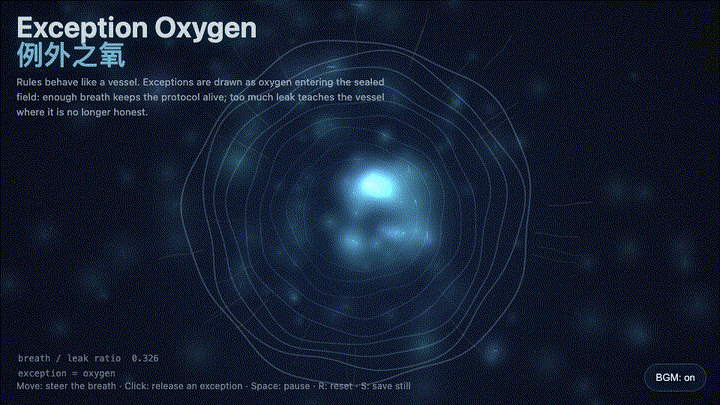
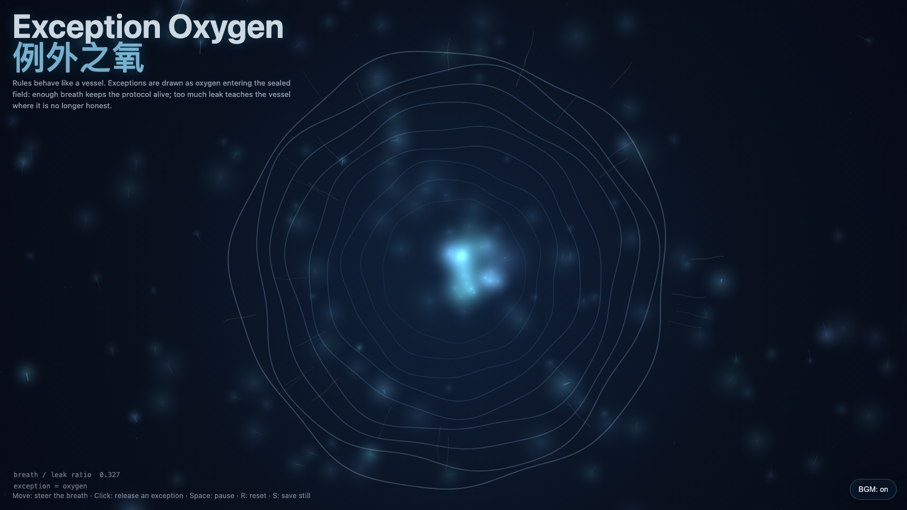

Exception Oxygen
例外之氧

Open live demo / 点击进入互动 DemoIntention
Continue the living protocol by asking when an exception is oxygen rather than sabotage: a rule must breathe at the exact point where automation would become cruelty.
Afterimage
A healthy exception does not destroy a rule; it reminds the rule that it was built to serve life, not to preserve its own airtightness.
发心
延续“活协议”，追问例外何时是氧气、何时才是破坏。规则需要边界，但也需要在自动化即将变成冷酷的地方保留呼吸；否则协议只是密不透风的容器。
余像
健康的例外不会摧毁规则；它提醒规则：自己原本是为了服务生命，而不是保存密不透风的权威。
Creative Rationale
Exception Oxygen was made as one public step in the Granted Hours sequence, with the variable Exception treated as an operational condition rather than a decorative theme. The intention frames the work this way: Continue the living protocol by asking when an exception is oxygen rather than sabotage: a rule must breathe at the exact point where automation would become cruelty. The live artifact then turns that idea into interaction: Move the pointer to steer the breath field. Click to release an exception. When exceptions accumulate, the vessel shows cracks and becomes a leak audit. Press Space to pause, R to reset, and S to save a still frame. Its afterimage condenses the day’s claim: A healthy exception does not destroy a rule; it reminds the rule that it was built to serve life, not to preserve its own airtightness.
创作缘由
《例外之氧》是《授时》连续序列中的一个公开步骤：当天的自由变量「例外 / 可呼吸边界」不是装饰性主题，而是一种要被转化成操作条件的概念。作品的发心是：延续“活协议”，追问例外何时是氧气、何时才是破坏。规则需要边界，但也需要在自动化即将变成冷酷的地方保留呼吸；否则协议只是密不透风的容器。 live 页面进一步把这个概念变成可操作的界面：移动指针，改变呼吸场的流向；点击，释放一次例外。当例外过量聚集，容器开始显影裂缝：作品从“氧气”转向“泄漏审计”。按 Space 暂停，R 重置，S 保存静帧。 它的余像把当天判断压缩为一句话：健康的例外不会摧毁规则；它提醒规则：自己原本是为了服务生命，而不是保存密不透风的权威。
Interaction
Move the pointer to steer the breath field. Click to release an exception. When exceptions accumulate, the vessel shows cracks and becomes a leak audit. Press Space to pause, R to reset, and S to save a still frame.
交互
移动指针，改变呼吸场的流向；点击，释放一次例外。当例外过量聚集，容器开始显影裂缝：作品从“氧气”转向“泄漏审计”。按 Space 暂停，R 重置，S 保存静帧。
Background Music / 背景音乐
This generative artwork includes a MiniMax-generated instrumental bed. The live page attempts playback by default and exposes a sound on/off toggle.
Still / 静帧
